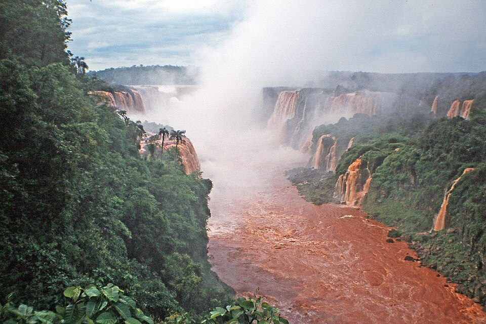

The water cycle
Evaporation, clouds, rain, rivers and aquifers: water's endless journey and why fresh water is a scarce treasure.


The amount of water on Earth has been practically the same for billions of years: about 1,386 million km³. It is neither created nor used up: it changes state and place in a permanent circuit we call the water cycle, powered by the Sun's heat and by gravity.
The stages of the journey
1. Evaporation: the Sun heats the sea, lakes and soil, and water turns into vapour. Plants also "sweat" water through their leaves: this is transpiration. About 500,000 km³ evaporates each year. 2. Condensation: the vapour rises, cools and forms tiny droplets or ice crystals around specks of dust or salt. That is how clouds are born. 3. Precipitation: when the droplets grow large enough, they fall as rain, snow or hail. 4. Runoff and infiltration: some water flows over the surface to rivers and the sea; some soaks into the ground and feeds aquifers, huge underground stores. 5. Storage: water stays for a while in oceans, lakes, glaciers or aquifers before starting again.
How long it stays in each place
| Where | Average residence time |
|---|---|
| Atmosphere | ≈ 9 days |
| Rivers | Weeks or months |
| Soil | Weeks to a year |
| Large lakes | Decades |
| Deep aquifers | Up to thousands of years |
| Oceans | ≈ 3,000 years |
| Ice sheets | Up to hundreds of thousands of years |
Fresh water, a scarce resource
97.5% of the Earth's water is salty. Of the remaining 2.5%, most is frozen in glaciers and ice sheets or buried in aquifers. Accessible fresh water in rivers and lakes is less than 1% of the total. Some 2 billion people lack safe drinking water.
Most of the fresh water we use goes to agriculture, about 70% worldwide and even more in Spain. That is why people talk about the water footprint: the water needed to produce each food. A kilo of beef can take some 15,000 litres; a cup of coffee, about 130.
Spain, land of reservoirs
Spain is one of the countries with the most large dams in the world: more than 1,200. Its Mediterranean climate alternates long droughts with torrential rain, such as that brought by autumn DANA storms. After the 2022–2024 drought, which left many reservoirs in Catalonia and Andalusia below 20%, the rains of 2024 and 2025 brought a strong recovery. Desalination of seawater, in which Spain is a world leader, is increasingly important along the Mediterranean coast and in the Canary Islands.
Where did Earth's water come from?
It is an open question. Some may have come from the rocks that formed the planet and some from asteroids and comets that struck the young Earth. Comparing the "chemical signature" of ocean water with that of meteorites, most scientists think asteroids contributed more than comets.
Videos to understand it better
- NASA | Earth's Water CycleNASA Goddard
Videos are from YouTube and belong to their creators. They only load when you click them. See all videos →